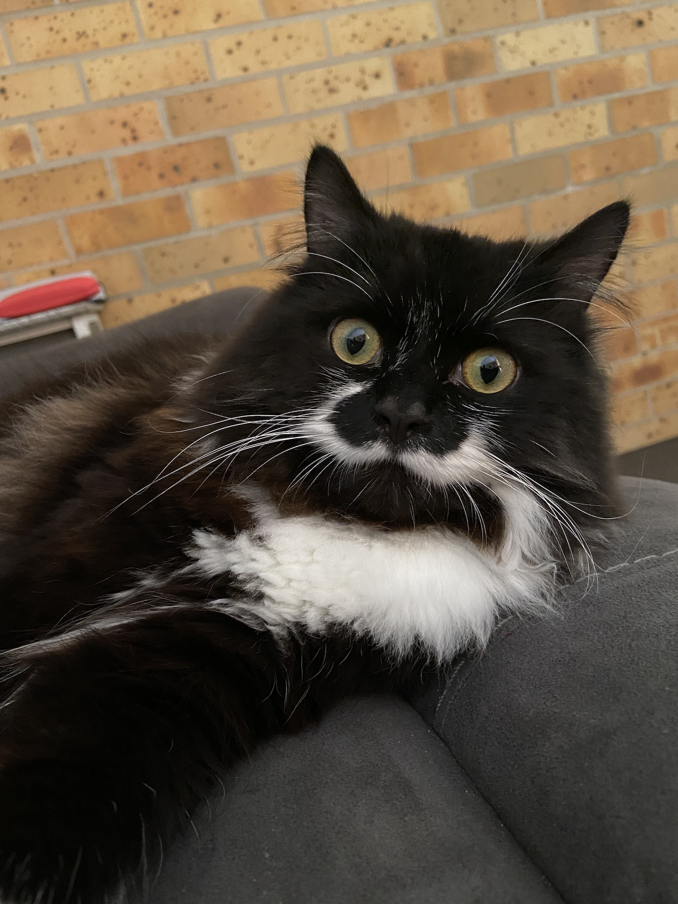

Feline Moustache Care
Cats with mustaches are undoubtedly the feline equivalent of dapper gentlemen, and maintaining their facial fuzz is a matter of utmost importance in the world of whiskered elegance.
First and foremost, the discerning cat owner must invest in a miniature mustache comb, the kind that wouldn't look out of place in a kitty-sized barbershop.
Picture your cat reclining on a tiny chair, wearing a monocle, while you meticulously untangle its sophisticated whiskers. Remember, a well-groomed mustache can make the difference between a cat who merely catches mice and one who catches mice with style.
Next on the moustache care agenda is the occasional waxing session. Yes, you heard it right – cat moustache wax.
Imagine the hilarity as your cat squirms in protest while you attempt to apply a minuscule amount of feline-friendly moustache wax.
The goal is to achieve a perfectly curled moustache that signals to the neighborhood cats, "I may nap on your doorstep, but I do it with class." Just be prepared for the disapproving stares from your cat, who will undoubtedly question your sanity and potentially plot revenge involving knocking over your favorite houseplants.
Last but certainly not least, consider organizing a monthly mustache party for your cat and its whiskered companions.
Picture a room full of sophisticated felines, sipping from tiny saucers of milk and engaging in whisker-centric conversations.
Throw in a few catnip-infused toys shaped like miniature top hats and monocles, and you've got yourself a soirée that even the most discerning cats would attend.
After all, a well-groomed moustache is not just a facial accessory; it's a lifestyle, darling.